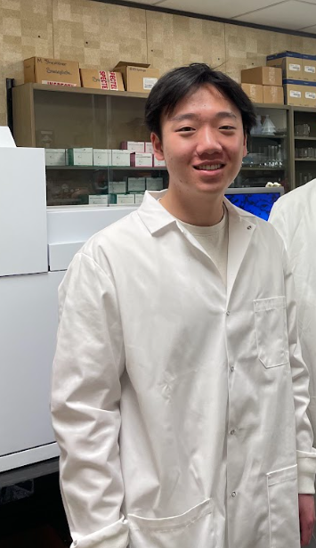
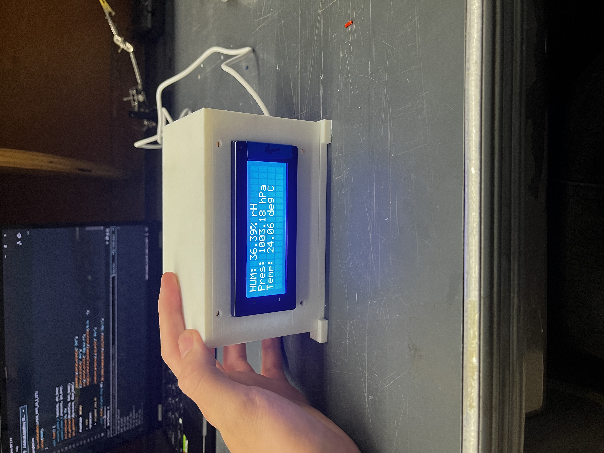
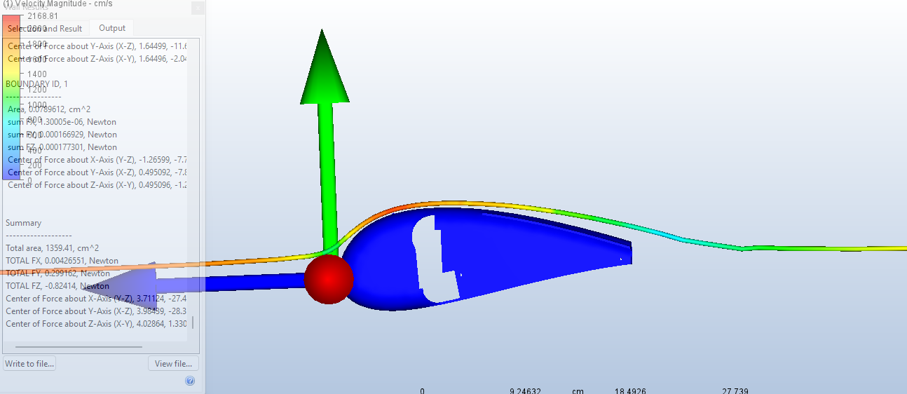
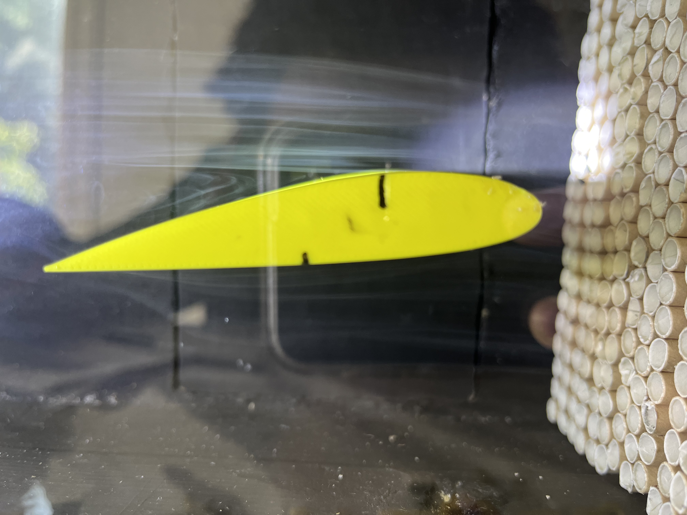
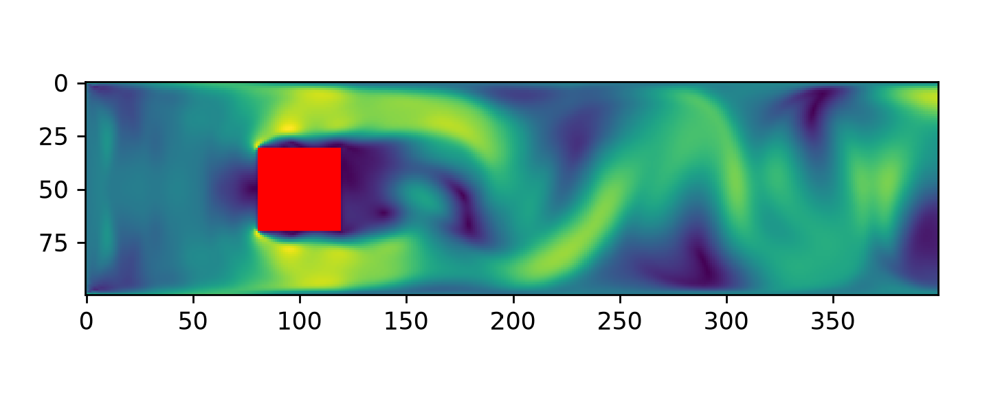

About Me
Hello!
My name is Nathan Xia and I am an incoming second year Engineering Science student at the University of Toronto, intending to specialize in Aerospace Engineering. I have a lifelong passion for anything aerospace, and am especially interested in aeroacoustics, flow control, and both experimental and computational fluid dynamics. In the future, I hope to continue my studies into graduate school and R&D. I have showcased a few of my notable projects to help supplement my resume and to convince you of my passion!
Throughout these projects, I have gained proficiency in a variety of tools and languages. The most notable ones are listed below:
Tools and Languages

Featured Work

Aeroacoustics Parametric Research Project
Investigating the affect of various parameters on RMP transfer functions for aeroacoustics.

Cansat Autonomous Glider
Mechanical design of a rocket-deployed autonomous glider body, nosecone, and tail for the AAS CANSAT competition. Under the RSX Aerial design team.

Flow Control Research Project
Investigating the affect of vortex generator placement and gap spacing for stall AOA mitigation, tested in a homemade flow-visualization wind tunnel.

Lattice-Boltzmann Method CFD
A simplified, cloud/web-based CFD tool built on LBM for beginners, hobbyists, and design teams.
Ongoing